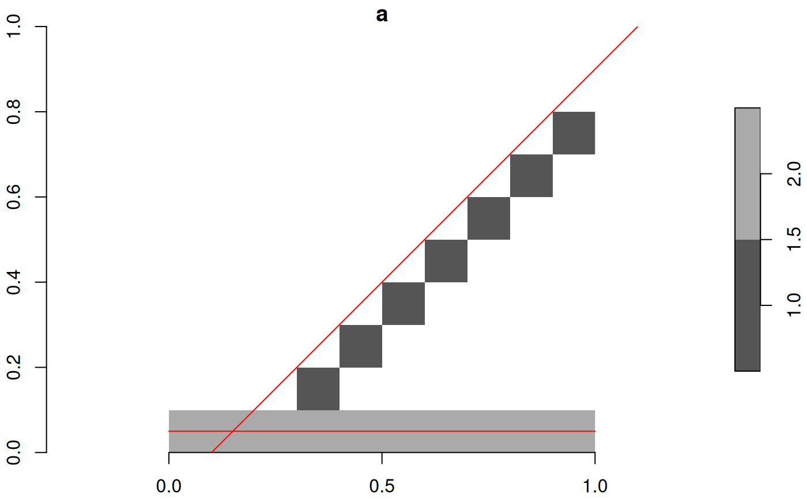
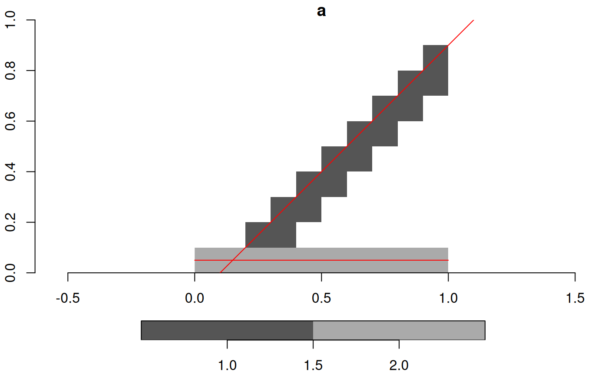

rasterize simple feature geometries
st_rasterize( sf, template = st_as_stars(st_bbox(sf), values = NA_real_, ...), file = tempfile(), driver = "GTiff", options = character(0), ... )
Arguments
| sf | object of class |
|---|---|
| template | stars object with desired target geometry |
| file | temporary file name |
| driver | driver for temporary file |
| options | character; options vector for |
| ... | arguments passed on to st_as_stars |
Examples
#> Reading layer `nc.gpkg' from data source `/home/runner/work/_temp/Library/sf/gpkg/nc.gpkg' using driver `GPKG' #> Simple feature collection with 100 features and 14 fields #> Attribute-geometry relationship: 0 constant, 8 aggregate, 6 identity #> geometry type: MULTIPOLYGON #> dimension: XY #> bbox: xmin: -84.32385 ymin: 33.88199 xmax: -75.45698 ymax: 36.58965 #> CRS: 4267(x = st_rasterize(nc)) # default grid:#> stars object with 2 dimensions and 1 attribute #> attribute(s): #> AREA #> Min. :0.042 #> 1st Qu.:0.108 #> Median :0.142 #> Mean :0.145 #> 3rd Qu.:0.181 #> Max. :0.241 #> NA's :30904 #> dimension(s): #> from to offset delta refsys point values x/y #> x 1 461 -84.3239 0.0192484 GEOGCS["NAD27",DATUM["Nor... FALSE NULL [x] #> y 1 141 36.5896 -0.0192484 GEOGCS["NAD27",DATUM["Nor... FALSE NULL [y]# a bit more customized grid: (x = st_rasterize(nc, st_as_stars(st_bbox(nc), nx = 100, ny = 50, values = NA_real_)))#> stars object with 2 dimensions and 1 attribute #> attribute(s): #> AREA #> Min. :0.0420 #> 1st Qu.:0.1080 #> Median :0.1420 #> Mean :0.1455 #> 3rd Qu.:0.1810 #> Max. :0.2410 #> NA's :2373 #> dimension(s): #> from to offset delta refsys point values x/y #> x 1 100 -84.3239 0.0886687 GEOGCS["NAD27",DATUM["Nor... FALSE NULL [x] #> y 1 50 36.5896 -0.0541531 GEOGCS["NAD27",DATUM["Nor... FALSE NULL [y](ls = st_sf(a = 1:2, st_sfc(st_linestring(rbind(c(0.1, 0), c(1.1, 1))), st_linestring(rbind(c(0, 0.05), c(1, 0.05))))))#> Simple feature collection with 2 features and 1 field #> geometry type: LINESTRING #> dimension: XY #> bbox: xmin: 0 ymin: 0 xmax: 1.1 ymax: 1 #> CRS: NA #> a #> 1 1 #> 2 2 #> c..st_sfc.st_linestring.rbind.c.0.1..0...c.1.1..1.....st_linestring.rbind.c.0..........0.05...c.1..0.05...... #> 1 LINESTRING (0.1 0, 1.1 1) #> 2 LINESTRING (0 0.05, 1 0.05)(grd = st_as_stars(st_bbox(ls), nx = 10, ny = 10, xlim = c(0, 1.0), ylim = c(0, 1), values = NA_real_))#> stars object with 2 dimensions and 1 attribute #> attribute(s): #> values #> Min. : NA #> 1st Qu.: NA #> Median : NA #> Mean :NaN #> 3rd Qu.: NA #> Max. : NA #> NA's :100 #> dimension(s): #> from to offset delta refsys point values x/y #> x 1 10 0 0.1 NA NA NULL [x] #> y 1 10 1 -0.1 NA NA NULL [y]# Only the left-top corner is part of the grid cell: sf_extSoftVersion()["GDAL"]#> GDAL #> "2.2.3"# add lines to existing 0 values, summing values in case of multiple lines: (grd = st_as_stars(st_bbox(ls), nx = 10, ny = 10, xlim = c(0, 1.0), ylim = c(0, 1), values = 0))#> stars object with 2 dimensions and 1 attribute #> attribute(s): #> values #> Min. :0 #> 1st Qu.:0 #> Median :0 #> Mean :0 #> 3rd Qu.:0 #> Max. :0 #> dimension(s): #> from to offset delta refsys point values x/y #> x 1 10 0 0.1 NA NA NULL [x] #> y 1 10 1 -0.1 NA NA NULL [y]r = st_rasterize(ls, grd, options = c("MERGE_ALG=ADD", "ALL_TOUCHED=TRUE")) plot(r, axes = TRUE, reset = FALSE)